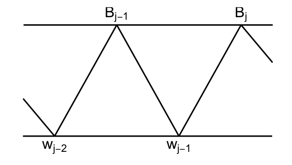
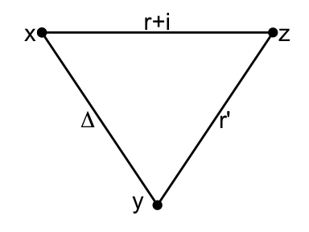

Chapter 12 Distance-Regular
Monday, February 15, 1993
Lemma 12.1 For any connected graph \(\Gamma = (X, E)\), the following are equivalent.
Note. Let \(\Gamma = (X, E)\) be a graph, with \(X = \{x, y_1, y_2, y_3, z_1, z_2, z_3\}\), \(E = \{xy_1, xy_2, xy_3, y_1z_1, y_1z_2, y_2z_3, y_3z_3\}\).  Then \((i)\), \((ii)\) are not equivalent for a single vertex \(x\). \[\begin{align} E^*_0T\hat{x} & = \langle \hat{x}\rangle, \\ E^*_1T\hat{x} & = \langle y_1 + y_2 + y_3\rangle, \\ E^*_2T\hat{x} & = \langle z_1 + z_2 + 2z_3\rangle. \end{align}\]
Proof (Proof of Lemma 12.1). \((i)\to (ii)\) Let \(\delta = \sum_{y\in X}\delta_y\hat{y}\) be an eigenvector for the maximal eigenvalue \(\theta_0\). Then, \[\begin{align} \sum_{y\in X, \partial(x,y) = 1}\hat{y} & = A\hat{x} \in T(x)\hat{x} = T(x)\delta \ni E^*_1\delta\\ & = \sum_{y\in X, \partial(x,y)=1}\delta_h\hat{y} \end{align}\] If the trivial \(T(x)\)-module is thin, \[\delta_y = \delta_z \; \text{ for }\; y, z\in X, \; \partial(x,y) = \partial(x,z) = 1.\] Hence, \(\delta_y = \delta_z\) if \(y\) and \(z\) in \(X\) are connected by a path of even length.
So, \(\Gamma\) is regular or bipartite biregular by Lemma 11.2.
In particular, \(\delta_y = \delta_z\) if \(\partial(x,y) = \partial(x,z)\), as there is a path of length \(2\cdot \partial(x,y)\); \[y\sim \cdots \sim x \sim \cdots \sim z.\] Hence, \[E^*_i\delta \in \mathrm{Span}\left(\sum_{y\in X, \partial(x,y) = i}\hat{y}\right).\] Since \(E^*_0\delta, E^*_1\delta, \ldots, E^*_d\delta\) forms a basis for \(T(x)\delta\), we have \((ii)\).
\((ii)\to (iii)\) Fix \(x\in X\), and let \(T \equiv T(x)\), \(E^*_i\equiv E^*_i(x)\), and \(d \equiv d(x)\).
\[\begin{align} A\sum_{y\in X, \partial(x.y)=i}\hat{y} & = \sum_{z\in X} |\{y\in X \mid \partial(y,z) = 1, \; \partial(x,y) = i\}|\hat{z}\\ & = \sum_{z\in X, \partial(x,y) = i-1}b_{i-1}(x,z)\hat{z} \\ & \qquad + \sum_{z\in X, \partial(x,y) = i} a_{i}(x,z)\hat{z} \\ & \qquad + \sum_{z\in X, \partial(x,y) = i+1} c_{i+1}(x,z)\hat{z}\\ & \in \mathrm{Span}\left\{\left.\sum_{z\in X, \partial(x,z) = j}\hat{z} \; \right| \; j = 0, 1, \ldots, d \right\}. \end{align}\]
Hence, \(b_{i-1}(x,z)\), \(a_i(x,z)\) and \(c_{i+1}(x,z)\) depend only on \(i\) and \(x\), and not on \(z\). Therefore, \(\Gamma\) is distance-regular with respect to \(x\).
\((iii)\to (i)\) Fix \(x\in X\), and let \(T \equiv T(x)\), \(E^*_i\equiv E^*_i(x)\), and \(d \equiv d(x)\). By defintion of distance-regularity, for every \(i\) \((0\leq i\leq d)\), \[\begin{align} A\left(\sum_{y\in X, \partial(x,y)=i}\hat{y}\right) & = b_{i-1}(x)\sum_{y\in X, \partial(x,y) = i-1}\hat{y} \\ & \qquad + a_{i}(x)\sum_{y\in X, \partial(x,y) = i}\hat{y}\\ & \qquad + c_{i+1}(x)\sum_{y\in X, \partial(x,y) = i+1}\hat{y}. \end{align}\] Hence, \[W = \left\{\left.\sum_{y\in X, \partial(x,y)=i}\hat{y} \; \right| \; 0\leq i\leq d\; \right\}\] is \(A\)-invariant and so \(T\)-invariant. Since \(\hat{x}\in W\), \(T\hat{x} = W\) is the trivial module and \(T\hat{x}\) is thin.
Next, we show more is true if \((i)-(iii)\) hold in Lemma 12.1.
In fact, \(d(x)\), \(a_i(x)\), \(c_i(x)\), and \(b_i(x)\) are \[\begin{cases} \text{independent of $X$} & \text{if $\Gamma$ is regular; or}\\ \text{constant over $X^+$ and $X^-$} & \text{if $\Gamma$ is biregular.} \end{cases}\]
Let \(\Gamma = (X, E)\) be any (connected) graph. Pick vertices \(x, y\in X\).
Let \(W\) be a thin, irreducible \(T(x)\)-module, and measure \(m: \mathbb{R} \to \mathbb{R}\) determined by \(W\).
Let \(W'\) be a thin, irreducible \(T(y)\)-module, and measure \(m: \mathbb{R} \to \mathbb{R}\) determined by \(W'\).
Recall \(W\), \(W'\) are orthogonal if \[\langle w, w'\rangle = 0 \quad \text{for all }w\in W, w'\in W'.\]
We shall show if \(W\) and \(W'\) are note orthogonal, then \(m\) and \(m'\) are related: \[m\cdot \mathrm{poly}_1 = m'\cdot \mathrm{poly}_2\] for some polynomials with \[\deg \mathrm{poly}_1 + \deg \mathrm{poly}_2 \leq 2\cdot \partial(x,y).\]
Notation. \(V\): standard module of \(\Gamma\).
\(H\): any subspace of \(V\).
\[V = H + H^\bot \quad \text{orthogonal direct sum},\] and for \(v = v_1 + v_2\) \(\mathrm{proj}_H: V\to H \; (v\mapsto v_1)\): linear transformation.
Observe: For every \(v\in V\), \[v - \mathrm{proj}_H v \in H^\bot.\] So, \[\langle v - \mathrm{proj}_H v, h\rangle = 0 \quad \text{for all }\;h\in H \text{ or},\] \[\langle v, h\rangle = \langle \mathrm{proj}_H v, h\rangle \quad \text{for all }\;v\in V, \;\text{ and for all }\: h\in H.\]
Theorem 12.1 Let \(\Gamma = (X,E)\) be any graph. Pick vertices \(x,y\in X\) and set \(\Delta = \partial(x,y)\). Assume
\(W\): thin irreducible \(T(x)\)-module with endpoint \(r\), diameter \(d\), and measure \(m\).
\(W'\): thin irreducible \(T(y)\)-module with endpoint \(r'\), diameter \(d'\), and measure \(m'\).
\(W\) and \(W'\) are not orghotonal.
Now pick \[0\neq w\in E^*_r(x)W, \quad 0\neq w\in E^*_{r'}(x)W'.\] Then,
for some \(0\neq p\in \mathbb{C}[\lambda]\) with \(\deg p \leq \Delta - r' + r, d'\),
\({\displaystyle \mathrm{proj}_{W}w' = p'(A)\frac{\|w'\|}{\|w\|}w}\)
for some \(0\neq p'\in \mathbb{C}[\lambda]\) with \(\deg p \leq \Delta - r + r', d\).
\[\frac{\langle E_iw, E_iw'\rangle}{\|w\|\|w'\|} = m(\theta_i)\overline{p'(\theta_i)}.\]
\[p(\theta_i)p'(\theta_i)\] is in a real number in interval \([0,1]\).
Proof. \((i)\) Since \(W\), \(W'\) are not orthogonal, there exist \[v\in W, \; v'\in W' \; \text{ sich that }\; \langle v, v'\rangle \neq 0.\] Then there exists \(a\in M\) such that \[v' = aw'.\] (This is becase \(w'_i = p'_i(A)w_0'\) and hence for every \(v'\in W'\), there is a polynomial \(q\in \mathbb{C}[\lambda]\), \(q(A)w_0' = v\).)
We have \[0\neq \langle v', v\rangle = \langle aw', v\rangle = \langle w', a^*v\rangle\] and \(a^*v\in W\).
Hence, \(\mathrm{proj}_{W} w' \neq 0\).
Let \(p_0, \ldots, p_d\in \mathbb{C}[\lambda]\) be from Lemma 9.1.
Then, \(w_i = p_i(A)w\) is a basis for \(E^*_{r+i}(x)W \quad (0\leq i\leq d)\).
Hence, \[\mathrm{proj}_{W}w' = \alpha_0w_0 + \cdots + \alpha_dw_d \quad \text{for some }\; \alpha_j\in \mathbb{C}.\] Set \[p' := \frac{\|w\|}{\|w'\|}\sum_{i=0}^d \alpha_ip_i.\] Then \(0\neq p'\in \mathbb{C}[\lambda]\) and \(\deg p' \leq d\).
Claim: \(\alpha_i = 0\) \((\Delta - r + r' < i\leq d)\).
In particular, \(\deg p' \leq \Delta - r + r'\).
Pf. Obseve: \[w'\in E^*_{r'}(y)V, \quad w \in E^*_r(x)V,\] for \(\partial(x,y) = \Delta\). \[E^*_{r'}(y)V \cap E^*_{r+i}(x)V = 0\] by triangle inequality.
(\(\Delta = \partial(x,y) < r+i - r'\) or \(\Delta + r' < r + i\) by our choice of \(i\).)

Hence, \[E^*_{r'}(y)V \bot E^*_{r+i}(x)V,\] or \[\begin{align} 0 & = \langle w', w_i\rangle \\ & = \langle \mathrm{proj}_{W}w', w_i\rangle\\ & = \sum_{j=0}^d\alpha_j\langle w_j, w_i\rangle\\ & = \alpha_i\|w_i\|^2. \end{align}\] Hence, \(\alpha_i = 0\). Thus, \[\begin{align} \mathrm{proj}_{W}w' & = \sum_{i=0}^{\Delta + r' - r}\alpha_iw_i\\ & = \sum_{i=0}^{\Delta + r' - r}\alpha_ip_i(A)w_0\\ & = p'(A)\frac{\|w'\|}{\|w\|}w. \end{align}\]
\((ii)\) We have \[\begin{align} \frac{\langle E_iw, E_iw'\rangle}{\|w\|\|w'\|} & = \frac{\langle E_iw, w'\rangle}{\|w\|\|w'\|}\\ & = \frac{\langle E_iw, \mathrm{proj}_W w'\rangle}{\|w\|\|w'\|} && \text{as }\; \mathrm{proj}_Ww' = p'(A)\frac{\|w\|}{\|w'\|}w\\ & = \frac{\langle E_iw, p'(A) w\rangle}{\|w\|^2}\\ & = \frac{\langle E_iw, E_ip'(A) w\rangle}{\|w\|^2}\\ & = \overline{p'(\theta_i)}\frac{\|E_iW\|^2}{\|w\|^2}\\ & = \overline{p'(\theta_i)}m(\theta_i). \end{align}\] Moreover, as \(m(\theta_i)\), \(m'(\theta_i)\in \mathbb{R}\), \[\frac{\langle E_iw, E_iw'\rangle}{\|w\|\|w'\|} = \frac{\overline{\langle E_iw, E_iw'\rangle}}{\|w'\|\|w\|} = \overline{\overline{p(\theta_i)}m'(\theta_i)} = p(\theta_i)m'(\theta_i).\]
\((iii)\) Sicne, \[\frac{|\langle E_iw, E_iw'\rangle\|^2}{\|w\|^2\|w'\|^2} = p(\theta_i)p'(\theta_i)m(\theta_i)m'(\theta_i),\] \[\begin{align} p(\theta_i)p'(\theta_i) & = \frac{|\langle E_iw, E_iw'\rangle\|^2}{m(\theta_i)m'(\theta_i)\|w\|^2\|w'\|^2} \in \mathbb{R}\\ & = \frac{|\langle E_iw, E_iw'\rangle\|^2}{\frac{\|E_iw\|^2}{\|w\|^2}\frac{\|E_iw'\|^2}{\|w'\|^2}\|w\|^2\|w'\|^2}. \end{align}\]
By Cauchy-Schwartz inequality, \[(|\langle a, b\rangle | \leq \|a\|\|b\|,)\] \[\frac{|\langle E_iw, E_iw'\rangle\|^2}{\|E_iw\|^2\|E_iw'\|^2} \leq 1.\] Hence, we have the assertion.